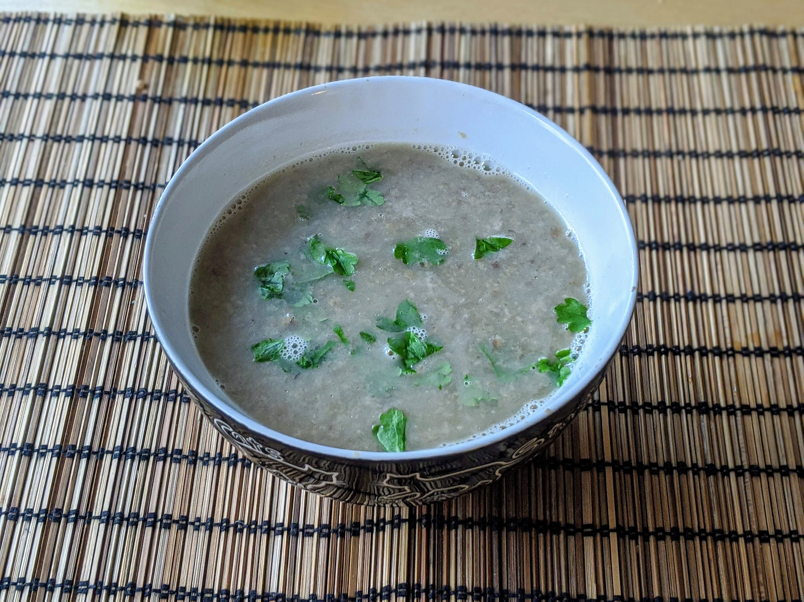

Soupe aux champignons

Pour 3-4 personnes :
- Deux oignons
- Un bon kilo de champignons standard
- Une bonne poignée de champignons séchés un peu stylés (chanterelles, cèpes, girolles…)
- Un verre de vin blanc
- Un litre de bouillon de légumes
- Une cuillère à café d'estragon
- 200mL de crème
- Sel, poivre, huile d'olive
- Mettre les champignons séchés dans un litre d'eau bien chaude. En attendant qu'ils gonflent, émincer les oignons, et les faire revenir dans une mijoteuse (ou une grande cocotte) avec de l'huile d'olive.
- Laver et couper les champignons en bouts grossiers, les ajouter dans la cocotte, et les faire revenir pendant quelques minutes.
- Égoutter les champignons stylés (garder l'eau de cuisson, une fois passée à la passoire fine, on peut s'en servir pour faire le bouillon de la soupe ou pour parfumer un autre plat), en rajouter la moitié dans la mijoteuse avec le verre de vin. Émincer l'autre moitié et réserver.
- Ajouter bouillon, sel, poivre et estragon. Laisser mijoter 4 heures gentiment dans la mijoteuse, ou 2 heures à feu doux sur une plaque de cuisson classique.
- Mixer la soupe, rajouter la crème et l'autre moitié des champignons stylés. Corriger l'assaisonnement, servir chaud (réchauffer gentiment si besoin mais c'est mieux de ne pas recuire).
Retour à la liste des recettes